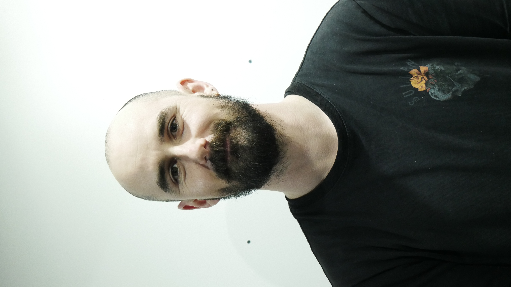

Un tatouage naît d'un projet, pas d'un catalogue.
Brenn dessine chaque pièce avec toi, de la première idée à la séance.

L'artiste
Brendan Le Damany s’est développé dans le milieu du tatouage avec l’idée que chaque tatouage doit être unique, impactant et refléter la personnalité de ses client(e)s.
Sa façon de travailler
C’est avant tout une rencontre, un échange et des émotions
transposées au motif pour traverser le temps avec vous. Une
approche douce, dans la bienveillance et la compassion.
Si l’on doit résumer l’approche artistique ce serait profondeur et
lumières, créer une oeuvre qui respecte le dynamisme et la
morphologie de la partie du corps à tatouer - tout en restant
simple mais impactant dans la composition.
Brenn exerce depuis plus de 10 ans et saura vous guider pour tirer
le meilleur du potentiel créatif de votre projet.
Questions fréquentes
Comment se passe la première prise de contact ?
Le premier contact se fait généralement par mail via l’adresse
graphiteinktattoo@gmail.com ou via instagram @brennledamany
Nous discutons ensemble des détails du projet, des contraintes
liées à l’emplacement et de la taille que devra prendre le projet
pour respecter au mieux l’ensemble des critères que vous
souhaitez.
Ce qui nous permet ensuite de dresser un budget ensemble sur la
faisabilité de votre projet. Une fois que nous sommes en accord
sur tous ces points, une avance financière sur projet (arrhes)
vous sera demandée pour valider la date de rendez-vous.
Le visuel vous sera envoyé quelques jours avant la séance, ce qui
permettra d’apporter des modifications si besoin.
Si on résume :
Nous nous mettons d’accord sur la direction que doit prendre votre
projet
On précise le budget
Nous nous accordons sur une date de réalisation
Les arrhes sont versés pour bloquer le RDV
Le visuel
est envoyé quelques jours avant le rendez-vous pour les
éventuelles modifications.
Combien de temps faut-il attendre pour un rendez-vous ?
Je ne tatoue en général que du jeudi au samedi, des exceptions
peuvent être faites en fonction du planning de chacun.
Sur ces critères, le temps d’attente minimum est de deux semaines
pour une séance de tatouage, ce temps peut varier en fonction de
la période de l’année.
Concernant les rendez-vous « discussion physique » à la boutique,
ils peuvent se faire la semaine même de la demande ou la suivante.
Puis-je venir avec mes propres idées ou références ?
Bien sûr ! Si le global de l’idée est là et qu’on peut s’en
inspirer pour créer un motif unique et sur mesure pour vous.
La copie d’oeuvre originale sans autorisation ou celle d’un
tatouage réalisé sur une autre personne ne se fera pas au sein de
notre atelier.
Attendez vous à quelque chose de recherché, qui respecte vos
attentes, unique en son genre dans un univers graphique qui m’est
propre.
Comment bien préparer ma séance ?
Soyez à l’heure au rendez-vous, l’adresse vous sera communiquée
lors de la planification.
Venez non accompagné(e)
pour la séance
Prévoyez la journée entière dédiée au
tatouage, sans contrainte horaire avant ou après
Prenez une douche avant la séance pour faciliter
l’asepsie de la peau
NE PAS raser la
zone à tatouer avant la séance
Apportez de quoi
grignoter ou manger pendant les pauses, ainsi qu’une bouteille
d’eau
Prenez un bon petit-déjeuner le jour de la
séance et reposez-vous bien la veille
Portez des
vêtements qui permettent un accès facile à la zone à tatouer (par
exemple : débardeur pour le haut du bras, short ample pour les
jambes)
Ne buvez pas d’alcool la veille, et prévenez-nous si vous prenez
des anticoagulants ou de l’aspirine
Les modes de règlement acceptés vous seront communiqués à la fin
de discussion de projet
Comment prendre soin de mon tatouage ?
La méthode de soin vous sera transmise à la fin de votre séance de tatouage, une fiche de soin qu’il faudra respecter vous sera envoyée par mail pour garder une trame a la maison.